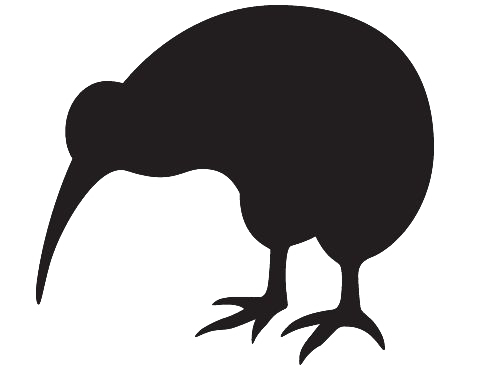
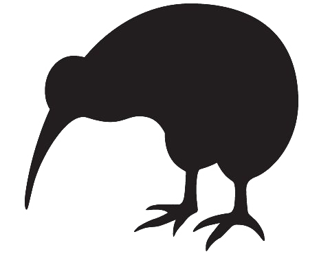

Niemand wollte ihn.
Nicht in Hamburg, nicht in Dresden, nicht einmal bei den Amateuren in Borna.
Burzel – ein Mann mit Ideen, aber ohne Namen. Ein Trainer ohne Vergangenheit, ohne Lobby. Ohne Chance.
Deutschland, das Land seiner Kindheit, hatte ihn ausgespuckt wie einen Fremdkörper. Die Bewerbungen blieben unbeantwortet, die Gespräche endeten in höflichem Schweigen. „Keine Erfahrung“, sagten sie. „Zu riskant.“
Doch in Burzel brannte etwas, das sich nicht löschen ließ – eine Vision vom Spiel, eine Sehnsucht nach Größe, ein Hunger nach Bedeutung.
Also packte er seine wenigen Sachen, löschte die Kontakte aus seinem Handy und stieg in ein Flugzeug, das ihn weiter weg brachte, als er je gedacht hätte: Neuseeland. Ein Ort, den der Fußball vergessen hatte. Und genau deshalb war es perfekt.
Dunedin City Royals – ein Verein, den niemand kannte, in einer Liga, die niemand verfolgte. Aber für Burzel war es mehr als ein Job. Es war ein Neuanfang. Ein stiller Aufbruch. Kein Applaus, keine Kameras. Nur ein Mann, ein Trainingsplatz, und ein Traum, der sich weigert zu sterben.
„Wenn ich hier scheitere, wird es niemand merken.
Aber wenn ich hier gewinne, wird es jeder wissen.“
Am Rande der Welt beginnt seine Reise.
Am Rande der Unsterblichkeit.
🗣️ „Er sieht aus wie ein Lehrer, nicht wie ein Trainer.“
flüsterte jemand im Hintergrund, als Burzel den Raum betrat.
🏟️ Der Presseraum war klein, fast schon intim.
Die Wände: geschmückt mit Vereinswimpeln.
Die Luft: ein Mix aus altem Teppich und frischem Kaffee.
👔 Der Vorstandsvorsitzende – Graham McLeod – erhob sich und lächelte höflich:
🎙️ „Ladies and Gentlemen – Dunedin City Royals freut sich, Ihnen unseren neuen Cheftrainer vorzustellen: Burzel.“
📸 Ein paar Kameras klickten.
Keine große Presse.
Keine Live-Übertragung.
Aber für Burzel fühlte es sich an wie ein Champions-League-Finale.
Er trat ans Mikrofon, räusperte sich – und sagte nur:
💬 „Ich bin nicht hier, um zu reden. Ich bin hier, um zu arbeiten.“
🌅 Am nächsten Morgen stand er zum ersten Mal am Trainingsplatz.
Die Sonne hing tief über den Hügeln von Otago.
Der Wind trug den salzigen Duft des Meeres herüber.
🏃♂️ Der Platz war einfach:
– zwei Tore
– ein Container als Kabine
– ein paar Hütchen
Aber Burzel sah mehr:
✨ Er sah Möglichkeiten.
👥 Die Spieler kamen einer nach dem anderen.
Junge Männer:
– viele mit Nebenjobs
– einige mit Träumen
– andere mit Zweifeln
🤝 Burzel begrüßte jeden persönlich:
Ein Handschlag.
Ein Blick in die Augen.
Ein kurzes Gespräch.
Kein Star.
Kein Ego.
Nur Menschen, die Fußball liebten.
🛠️ Dann kamen die Mitarbeiter:
– 🧢 Tom, der Co-Trainer – ein ehemaliger Rugbyspieler mit rauer Stimme und weichem Herz
– 🩺 Mira, die Physio – wusste mehr über Motivation als jeder Sportpsychologe
– 🌱 Liam, der Platzwart – mit einem Augenzwinkern:
„Wenn du hier Titel holen willst, brauchst du gute Stollen – und Geduld.“
Burzel nickte.
Er ging über den Platz, berührte das Gras, blickte auf die kleine Tribüne.
Vielleicht 200 Plätze.
Aber in diesem Moment wusste er:
🧠 „Hier beginnt es. Nicht mit Glanz. Sondern mit Ehrlichkeit.“
🧪 Die ersten Testspiele
📊 Ergebnisse:
– ✅ 2:0 gegen Wanaka
– ❌ 1:3 gegen Roslyn-Wakari
– ✅ 5:1 gegen Meadowbank United
– ✅ 6:0 gegen Green Island
– ✅ 3:1 gegen Mosgiel
– 🔥 6:4 gegen Roslyn-Wakari (Rückspiel)
💙 Die Royals begannen, an ihn zu glauben.
💪 Und Burzel begann, sich selbst wieder zu spüren.
Der Platz lag still.
Kein Ball rollte, kein Rufen, kein Lachen. Nur der Wind, der sanft durch die Netze der Tore strich, als wollte er sie wachhalten für morgen.
Burzel saß allein auf der Holzbank am Rand des Spielfelds. Die Flutlichtmasten waren aus, nur das fahle Licht des Mondes warf silberne Schatten auf das Gras. Vor ihm lag ein zerknitterter Notizblock, daneben ein Kugelschreiber, der schon bessere Tage gesehen hatte.
Er starrte auf das leere Feld.
Nicht leer – nicht für ihn. In seinem Kopf liefen die Bewegungen ab:
– Der Sechser kippt ab.
– Der Außenverteidiger schiebt hoch.
– Der Zehner lässt sich fallen, zieht zwei mit.
– Raum entsteht.
– Tempo.
– Abschluss.
„Wenn sie das verstehen… wenn sie das fühlen… dann können wir jeden schlagen.“
Er kritzelte Linien, Pfeile, kleine Kreise mit Nummern. Nicht nur Positionen – Persönlichkeiten.
– Nummer 6: Ethan, der stille Arbeiter.
– Nummer 10: Jayden, das ungezähmte Talent.
– Nummer 1: Callum, der Torwart, der lieber Gedichte schrieb als Interviews gab.
Burzel lächelte.
Nicht wegen der Taktik. Sondern weil er spürte, dass etwas wuchs. Etwas Echtes.
Er stand auf, ging langsam über das Feld. Jeder Schritt ein Gedanke. Jeder Blick ein Plan.
Er blieb am Mittelkreis stehen, sah nach oben. Die Sterne über Dunedin waren klar, fast trotzig.
„Ich bin hier. Ich bin bereit. Und ich werde alles geben.“
Dann ging er zurück zur Bank, packte den Block ein, nahm den Stift – und schrieb nur ein Wort auf die letzte Seite:
„Vertrauen.“
Die Kabine war eng.
Die Wände aus Beton, die Bänke aus Holz, die Luft schwer von Schweiß und Schweigen. Die Spieler saßen da – verschwitzt vom Training, müde vom Alltag, skeptisch vom Leben.
Burzel stand vor ihnen.
Kein Beamer, kein Flipchart. Nur er.
Ein Trainer, der gerade erst angekommen war. Ein Fremder mit einem Akzent, einem Notizbuch und einem Traum.
Er atmete tief durch.
Dann sagte er:
„Ich weiß, was ihr denkt. Dass ich verrückt bin. Dass ich keine Ahnung habe, wie es hier läuft. Aber ich sage euch etwas – und ich will, dass ihr mir zuhört.“
Die Spieler hoben die Köpfe.
Einige mit verschränkten Armen. Andere mit hochgezogenen Augenbrauen.
„Ich glaube, dass wir Meister werden können.“
Stille.
Ein paar schauten sich an. Einer lachte leise.
Burzel ließ es zu. Er wartete. Dann fuhr er fort:
„Nicht, weil wir die besten Einzelspieler haben. Nicht, weil wir das meiste Geld haben. Sondern weil wir etwas haben, das andere vergessen haben: Wir haben ein Warum.“
Er ging langsam durch die Kabine.
Sah jedem in die Augen.
„Ethan – du spielst, weil du deinem kleinen Bruder zeigen willst, dass man nie aufgibt.“
„Jayden – du willst beweisen, dass Talent nicht vergeudet werden muss.“
„Callum – du willst, dass deine Gedichte eines Tages von einem Titel erzählen.“
Die Stimmung kippte.
Die Skepsis wich einem leisen Staunen.
Burzel spürte es.
„Ich habe einen Plan. Ich habe eine Idee. Aber vor allem habe Vertrauen. In euch. In uns.“
Er hielt inne.
Dann sagte er leise:
„Wenn ihr mir folgt – nicht blind, sondern mit Herz – dann werden wir etwas schaffen, das größer ist als ein Pokal. Wir werden Geschichte schreiben.“
Ein paar Spieler nickten.
Andere schauten auf den Boden.
Doch in ihren Augen war etwas Neues: Hoffnung.
Jayden stand auf.
Er sagte nichts. Ging einfach zu Burzel, klatschte ihm auf die Schulter.
Dann folgten die anderen. Einer nach dem anderen. Kein Applaus. Kein Jubel. Nur stille Zustimmung.
Und Burzel wusste:
„Heute habe ich keine Taktik erklärt. Heute habe ich ein Feuer entfacht.“
Es war ein Samstag voller Regen.
Die Tropfen klatschten auf die Tribünen, der Wind peitschte über die Plätze. Doch Burzel saß da – Kapuze tief ins Gesicht gezogen, Notizbuch auf den Knien, Augen wach.
Er war auf der Suche.
Nicht nach Namen. Nicht nach Lebensläufen.
Sondern nach Funken.
Das erste Turnier war in South Dunedin.
U17. Viel Kampf, wenig Struktur. Doch dann – in Spiel drei – passierte es.
Ein langer Ball flog in den Strafraum.
Ein Junge mit der Nummer 9 sprintete los, nahm den Ball mit der Brust, ließ zwei Verteidiger stehen und schob ihn eiskalt ins lange Eck.
Burzel blätterte um.
„Alex Allen. 17. Stürmer. Kein Jubel. Nur Fokus.“
Er beobachtete ihn weiter.
Nicht nur die Tore. Sondern wie er sich bewegte, wie er sprach, wie er wartete.
Alex war kein Lauter. Aber er war ein Jäger.
Am nächsten Tag fuhr Burzel nach Port Chalmers.
U19-Turnier. Weniger Tempo, mehr Taktik.
Und dort sah er ihn: Louis Pickering.
Ein Innenverteidiger, der nicht nur klärte – sondern dirigierte.
Er schob die Kette, rief Kommandos, blockte mit dem Körper, spielte Pässe wie ein Sechser.
Und als sein Team in Rückstand geriet, war es Louis, der alle zusammenrief.
Kein Trainer. Kein Kapitän. Nur er.
„Führung. Mut. Timing. Das ist kein Talent. Das ist Charakter.“
Nach dem Spiel wartete Burzel.
Er sprach zuerst mit Alex.
Der Junge war zurückhaltend, skeptisch.
„Ich bin nicht sicher, ob ich bereit bin.“
Burzel lächelte.
„Du bist nicht bereit, weil du noch nie jemandem begegnet bist, der an dich glaubt. Ich bin dieser Jemand.“
Dann sprach er mit Louis.
Der war direkter.
„Was willst du von mir?“
Burzel antwortete:
„Ich will, dass du Teil von etwas wirst, das größer ist als du. Und ich will, dass du es mitgestaltest.“
Die beiden schauten sich an.
Zwei Talente. Zwei Wege.
Und ein Trainer, der ihnen nicht Ruhm versprach – sondern Bedeutung.
Am Montag standen sie am Trainingsplatz.
Alex mit gesenktem Blick. Louis mit verschränkten Armen.
Burzel begrüßte sie wie alte Freunde.
„Willkommen bei den Royals. Hier zählt nicht, woher du kommst. Sondern wohin du willst.“
Der April begann mit Regen – und endete mit Feuer.
Sieben Spiele. Sieben Siege.
Doch das war nicht das Erstaunliche.
Das Erstaunliche war, wie sie spielten.
Am 1. April, gegen FC Twenty 11, war es noch zögerlich.
Burzel stand an der Seitenlinie, die Arme verschränkt, das Herz rasend.
Doch dann: Alex Allen mit einem Doppelpack, Louis Pickering mit einer Grätsche, die das Stadion erbeben ließ.
6:1. Ein Statement.
„Das ist nicht Glück“, sagte Burzel in der Kabine. „Das ist der Anfang.“
Am 12. April gegen Nomads war es schon anders.
Die Spieler begannen, sich gegenseitig zu coachen.
Die Laufwege stimmten. Die Pässe hatten Timing.
Wieder 6:1.
Und diesmal war es nicht nur ein Sieg – es war ein Stil.
Burzel spürte, wie seine Idee wuchs.
Nicht als Taktik. Sondern als Haltung.
„Wir spielen nicht, um zu gewinnen. Wir spielen, um zu überzeugen.“
Er begann, neue Mitarbeiter zu suchen.
Nicht nach Lebensläufen – sondern nach Leidenschaft.
– Sophie, eine Videoanalystin, die Spiele wie Gedichte las.
– Reza, ein Mentaltrainer, der keine Motivationssprüche brauchte – nur Fragen.
– Ben, ein Scout, der lieber auf Dorfplätzen saß als in VIP-Logen.
Sie kamen. Nicht wegen Geld. Sondern wegen Burzel.
Wegen seiner Vision.
„Wir bauen kein Team. Wir bauen eine Bewegung.“
Die Siege gegen Coastal Spirit (3:1), Cashmere Tech (2:1), Selwyn United (5:2) und Christchurch United (3:2) waren hart erkämpft.
Doch jedes Mal stand Burzel danach in der Kabine, sah in die verschwitzten Gesichter – und sagte:
„Ihr habt nicht nur gespielt. Ihr habt geglaubt.“
Am 29. April, gegen Ferrymead Bays, war es dann klar:
Die Royals waren nicht mehr Außenseiter.
Sie waren eine Macht.
„Wir sind nicht hier, um Teil der Liga zu sein. Wir sind hier, um sie zu verändern.“
Der Mai war ruhig.
Nur zwei Spiele – ein knapper 4:3 gegen Green Island, ein souveränes 3:0 gegen Nelson Suburbs.
Doch Burzel wusste: Die wahre Herausforderung lag nicht im Spielplan.
Sondern im Zwischenraum.
„Wenn wir Meister werden wollen, müssen wir mehr sein als elf Spieler. Wir müssen eine Familie sein.“
Er begann, die freien Tage anders zu nutzen.
Nicht mit Taktik. Nicht mit Fitness.
Sondern mit Nähe.
Am Montag nach dem Green-Island-Spiel trafen sie sich nicht auf dem Platz – sondern am Strand.
Kein Ball. Kein Drill.
Nur ein Lagerfeuer, Musik aus einem alten Bluetooth-Lautsprecher, und Geschichten.
Ethan erzählte von seinem Vater, der nie ein Spiel gesehen hatte.
Jayden sprach über seine Angst, zu versagen.
Louis schwieg lange – und sagte dann:
„Ich habe nie gelernt, jemandem zu vertrauen. Bis jetzt.“
Burzel hörte zu.
Er sprach wenig.
Aber er sah, wie sich etwas veränderte.
Am nächsten Tag gab es ein Meeting – ohne Trainerrolle.
Jeder Spieler bekam eine Karte. Darauf stand:
„Was brauchst du, um dein Bestes zu geben?“
Die Antworten waren ehrlich.
Manche banal.
Manche tief.
„Respekt.“
„Ruhe.“
„Vertrauen.“
„Jemand, der mich sieht.“
Burzel sammelte sie ein, las sie laut vor – und sagte:
„Ab heute ist das unser Kodex. Nicht für mich. Für euch.“
Sie begannen, sich anders zu verhalten.
Sie halfen sich beim Tragen der Trainingsmaterialien.
Sie lobten sich laut.
Sie diskutierten – aber hörten zu.
Beim Spiel gegen Nelson Suburbs war es spürbar.
Die Pässe kamen blind.
Die Laufwege waren intuitiv.
Die Tore waren nicht Einzelaktionen – sie waren Choreografien.
„Das ist nicht Fußball“, sagte Sophie, die Analystin. „Das ist Verbundenheit.“
Nach dem Spiel saßen sie wieder zusammen.
Diesmal in der Kabine.
Kein Jubel. Kein Lärm.
Nur ein Satz von Callum, dem Torwart:
„Ich habe das Gefühl, wenn ich falle – fangen mich zehn andere auf.“
Burzel lächelte.
Er wusste:
„Jetzt sind wir bereit. Nicht für den Titel. Sondern füreinander.“
Der Juni begann mit einem Paukenschlag.
4:0 gegen Roslyn-Wakari im Chatham Cup.
Nicht nur ein Sieg – eine Demonstration.
Burzel stand am Rand, die Hände in den Taschen, das Herz ruhig.
Denn was er sah, war nicht Zufall.
Es war das Ergebnis von Vertrauen, von Gesprächen, von Nähe.
„Sie spielen, als würden sie einander spüren. Nicht sehen. Spüren.“
Am 10. Juni kam Cashmere Tech – ein harter Gegner.
Doch die Royals waren bereit.
4:2.
Und wieder war es nicht nur das Ergebnis – sondern die Haltung.
Alex Allen traf doppelt.
Louis Pickering blockte einen Schuss, der wie ein Tor roch.
Und Jayden, der einst zweifelte, spielte wie ein Regisseur.
Zwischen den Spielen war die Stimmung anders.
Nicht angespannt. Sondern gelöst.
Sie lachten beim Aufwärmen.
Sie diskutierten Taktik wie Künstler ihre Farben.
Sie waren nicht nur Spieler – sie waren Mitgestalter.
Am 24. Juni, auswärts bei FC Twenty 11, war es heiß.
Der Platz trocken, die Fans laut.
Aber die Royals blieben ruhig.
4:1.
Ein Spiel wie ein Uhrwerk.
„Sie spielen, als hätten sie ein gemeinsames Herz“, sagte Reza, der Mentaltrainer.
Und dann – am 28. Juni – wieder Chatham Cup.
Green Island. Auswärts.
Ein Gegner, der kämpfen konnte.
Doch die Royals kämpften nicht – sie kombinierten.
4:2.
Und am Ende standen sie da, Arm in Arm, als hätte niemand je gezweifelt.
Burzel ging in die Kabine.
Er sagte nichts.
Er sah sie an – und sie sahen zurück.
Und dann sagte Callum, der Torwart:
„Wir sind nicht mehr elf. Wir sind eins.“
Burzel nickte.
Denn er wusste:
„Jetzt beginnt das, wovon ich geträumt habe. Nicht der Titel. Sondern die Einheit.“
Und es ging weiter.
Und weiter.
Und weiter.
Der Juli begann mit einem 4:1 gegen Nomads.
Ein Auswärtsspiel, das früher Angst gemacht hätte – jetzt war es nur ein weiterer Beweis:
Die Royals waren nicht mehr zu stoppen.
Am 9. Juli kam Cashmere Tech – Achtelfinale im Chatham Cup.
5:1.
Ein Spiel wie ein Orkan.
Alex Allen traf doppelt, Louis Pickering blockte alles, was sich bewegte.
Und Jayden? Der spielte, als hätte er das Spiel erfunden.
„Wir sind nicht arrogant“, sagte Burzel danach. „Wir sind überzeugt.“
Am 15. Juli Coastal Spirit – 3:1.
Am 22. Juli Selwyn United – 4:0.
Am 29. Juli Manukau United – Viertelfinale im Pokal – 3:1.
Jedes Spiel ein Kapitel.
Jeder Sieg ein Beweis.
Nicht für die Tabelle.
Sondern für die Idee.
Im August wurde es fast surreal.
Christchurch United – 4:0.
Ferrymead Bays – 3:1.
Napier im Halbfinale – 7:4.
Ein Spiel wie ein Feuerwerk.
Zehn Tore.
Und kein Moment der Panik.
„Sie spielen, als wären sie eins“, sagte Sophie. „Nicht elf Körper. Ein Geist.“
Am 26. August – Green Island.
Ein Gegner, der alles versuchte.
Doch die Royals blieben ruhig.
4:3.
Ein enges Spiel.
Aber am Ende standen sie wieder da – Arm in Arm, Blick nach vorn.
Burzel saß nach dem Spiel allein in seinem Büro.
Er sah auf die Tafel mit den Ergebnissen.
Grüne Kreise.
Nur grün.
Keine blauen. Keine roten.
Er lächelte.
Nicht wegen der Siege.
Sondern weil er wusste:
„Sie glauben nicht mehr nur an mich. Sie glauben an sich.“
Der September begann nicht mit Nervosität.
Sondern mit Klarheit.
Am 2. September ging es nach Nelson.
Letztes Ligaspiel.
Ein Auswärtsspiel, das früher ein Stolperstein gewesen wäre.
Jetzt war es ein Triumphzug.
7:3.
Ein Ergebnis wie ein Feuerwerk.
Alex Allen mit einem Hattrick.
Louis Pickering mit einem Tor per Kopf – sein erstes.
Und Jayden mit einem Assist, der wie ein Gedicht war.
Nach dem Spiel standen sie auf dem Rasen.
Nicht jubelnd.
Sondern still.
Denn sie wussten:
„Das war nicht das Ende. Das war die Vorbereitung auf das Finale.“
Am 10. September war es so weit.
Chatham Cup – Finale.
Gegner: Western Suburbs.
Ort: Auswärts.
Druck: Unermesslich.
Die Kabine war leise.
Burzel ging nicht durch Taktik.
Er sprach nicht über Gegner.
Er sagte nur:
„Ihr habt euch verändert. Ihr seid gewachsen. Ihr seid verbunden.
Heute geht es nicht um den Pokal.
Heute geht es darum, zu zeigen, wer ihr geworden seid.“
Sie gingen raus.
Und sie spielten, als hätten sie nie etwas anderes getan.
4:0.
Ein Finale, das nie wie eines wirkte.
Weil sie nicht kämpften – sie dominierten.
Alex traf früh.
Jayden legte nach.
Louis blockte alles.
Und Callum hielt einen Elfmeter, als wäre es ein Kinderspiel.
Nach dem Abpfiff war es still.
Dann brach es los.
Jubel. Tränen. Umarmungen.
Burzel stand am Rand.
Er sah zu, wie seine Mannschaft den Pokal in die Höhe reckte.
Und er dachte:
„Ich bin nicht hierher gekommen, um Titel zu holen.
Ich bin gekommen, um etwas zu erschaffen.
Und das habe ich.“
Der Pokal war gewonnen.
Die Southern League abgeschlossen.
Doch Burzel wusste:
„Das war nur die Qualifikation. Jetzt beginnt das Spiel der Großen.“
NZNL – Championship.
Neuseelands nationale Elite.
Neun Spiele. Neun Prüfungen.
Und Burzel trat an – nicht als Außenseiter.
Sondern als Herausforderer.
🔥 Oktober: Der Monat der Feuerprobe
- 1. Oktober – Western Suburbs (H): 3:1
„Der Pokal war kein Zufall.“ - 4. Oktober – Wellington Olympic (A): 2:1
Jayden mit einem Solo, das in die Geschichtsbücher eingeht. - 7. Oktober – Petone (H): 5:1
Louis mit zwei Toren – als Innenverteidiger. - 22. Oktober – Eastern Suburbs (A): 2:1
Burzel rotiert. Die Bank liefert. - 25. Oktober – Auckland United (H): 3:1
Ein taktisches Meisterwerk. 3-4-3. Gegner verwirrt. Fans begeistert. - 28. Oktober – Manurewa (A): 6:3
Alex Allen mit vier Treffern.
„Er spielt wie ein Mann, der weiß, dass er Geschichte schreibt.“
⚔️ November: Der Monat der Entscheidung
- 1. November – Western Springs (H): 5:1
„Heute habt ihr Fußball zelebriert.“ - 5. November – Phoenix Reserves (A): 2:1
Callum mit drei Paraden in der Schlussphase.
„Du hast uns gerettet.“ - 11. November – Christchurch United (H): 3:1
Letztes Spiel der Gruppenphase. Halbfinale erreicht.
Burzel steht am Rand.
Neun Spiele. Neun Siege.
Er blickt auf seine Mannschaft.
Und denkt:
„Jetzt sind wir nicht mehr nur ein Team.
Jetzt sind wir ein Mythos.“
Sie hatten alles gewonnen.
Liga. Pokal. Championship-Gruppenphase.
Und plötzlich war Dunedin nicht mehr nur ein Ort.
Es war ein Name, der in ganz Neuseeland gesprochen wurde.
📰 Die Presse jubelt
„Burzel-Effekt“ titelte die Otago Daily Times.
„Aus Deutschland kam ein Trainer – und brachte eine Revolution.“
Sportkommentatoren sprachen von „organisiertem Wahnsinn“.
Fans trugen T-Shirts mit Jaydens Torjubel.
Kinder wollten wie Alex Allen spielen.
Und Sponsoren?
Sie standen Schlange.
💰 Neue Sponsoren, neue Möglichkeiten
Ein lokaler Baukonzern stieg ein.
Ein Sportartikelhersteller bot einen Ausrüstervertrag.
Und ein Energieunternehmen finanzierte die Flutlichtanlage.
Der Vorstand war elektrisiert.
Zum ersten Mal seit Jahren sprach man nicht über Budgetkürzungen.
Sondern über Visionen.
🏗️ Das Stadion wächst
Die Tribünen wurden erweitert.
Ein neuer Block für die Jugendfans.
VIP-Logen für Sponsoren.
Und ein Tunnel, durch den die Spieler wie Helden einlaufen.
Burzel stand auf der Baustelle.
Helm auf dem Kopf.
Und sagte:
„Ich bin kein Architekt. Aber ich weiß, wie man Träume baut.“
🏋️♂️ Trainingsplätze & Jugendförderung
Die Trainingsplätze wurden neu verlegt.
Rasen wie Teppich.
Videoanalyse-Räume.
Krafträume mit modernster Technik.
Die Jugend bekam eigene Trainer.
Eigene Kabinen.
Und Burzel sagte:
„Wenn wir wollen, dass sie groß werden, müssen wir ihnen zeigen, dass sie wichtig sind.“
👥 Neue Mitarbeiter
Burzel durfte einstellen.
Er holte:
– Einen Mentaltrainer aus Wellington
– Eine Ernährungsberaterin aus Christchurch
– Einen Scout, der früher für die All Whites gearbeitet hatte
– Und einen alten Freund aus Leipzig – als Co-Trainer
Das Team wuchs.
Nicht nur auf dem Platz.
Sondern in den Köpfen.
Burzel saß abends im Büro.
Die Sonne ging über Dunedin unter.
Er sah auf den Trainingsplatz.
Und dachte:
„Ich kam für Fußball.
Jetzt baue ich eine Zukunft.“
9. Dezember 2023.
15:00 Uhr.
Das Stadion war voll.
Die Tribünen bebten.
Die Kameras liefen.
Ganz Neuseeland schaute zu.
„Dunedin City Royals gegen Eastern Suburbs – das große Finale der NZNL Championship.“
Burzel stand am Rand.
Anzug. Kein Trainingsanzug.
Denn heute war kein Spiel.
Heute war Geschichte.
📺 Live im TV
Zum ersten Mal wurde ein Spiel der Royals landesweit übertragen.
Kommentatoren sprachen von „Burzels Wunder“.
Fans hielten Plakate hoch:
„Von Borna nach Dunedin – Trainer der Herzen.“
Die Spieler waren nervös.
Aber nicht ängstlich.
Denn sie wussten:
„Wir sind nicht hier, um zu spielen. Wir sind hier, um zu vollenden.“
⚔️ Das Spiel
Eastern Suburbs war stark.
Schnell. Technisch.
Doch die Royals waren bereit.
In der 23. Minute:
Alex Allen – wie aus dem Nichts – 1:0.
Ein Tor wie ein Paukenschlag.
Doch Eastern Suburbs glich aus.
1:1.
Die Spannung war greifbar.
Dann – in der 78. Minute –
Jayden mit einem Pass, der durch drei Linien ging.
Louis Pickering stieg hoch.
Kopfball.
2:1.
Die Bank explodierte.
Burzel ballte die Faust.
Aber sagte nichts.
🕰️ Die letzten Minuten
Eastern Suburbs warf alles nach vorn.
Callum hielt einen Schuss mit der Schulter.
Die Royals verteidigten wie Krieger.
Dann: Abpfiff.
🏆 Der Moment
Die Spieler fielen sich in die Arme.
Tränen. Jubel.
Der Pokal wurde überreicht.
Goldene Konfetti flogen durch die Luft.
Burzel ging langsam aufs Feld.
Er nahm den Pokal.
Hielt ihn hoch.
Und sagte nur:
„Für euch. Für uns. Für das, was wir geworden sind.“
Nach dem letzten Abpfiff war es still.
Nicht im Stadion – da tobte der Wahnsinn.
Aber in Burzels Kopf:
Ruhe.
Ein tiefer Atemzug.
Ein Blick in den Himmel von Dunedin.
✈️ Der Urlaub beginnt
Zwei Tage später:
Flughafen Auckland.
Burzel mit Sonnenbrille, Hoodie, und einem Ticket nach Fiji.
Keine Taktiktafeln.
Kein Trainingsplan.
Nur ein Buch, das er nie zu Ende gelesen hatte, und ein Cocktail mit zu viel Ananas.
🌅 Entspannung pur
– Morgens: Barfuß am Strand joggen.
– Mittags: Frischer Fisch, direkt vom Grill.
– Abends: Sonnenuntergang, leise Musik, Gedanken schweifen lassen.
Er schrieb Notizen.
Nicht über Gegner.
Sondern über sich.
Was ihn antreibt.
Was ihn verändert hat.
📓 Ein Gedanke, der bleibt
„Die zweite Saison wird härter.
Aber ich bin nicht mehr der, der ich war.
Ich bin Burzel.
Und ich komme zurück.“
Die Sonne stand tief über dem Pazifik.
Die Wellen rauschten sanft, als wollten sie zuhören.
Burzel saß auf einer Holzbank am Strand von Nadi, Fiji.
Neben ihm: Tomás Ortega, ehemaliger Trainer des FC Cádiz, jetzt halb im Ruhestand, halb Philosoph.
Sie hatten sich seit Jahren nicht gesehen.
Aber als Tomás hörte, dass Burzel in der Nähe war, hatte er nur geschrieben:
„Wenn du wirklich Pause willst, komm zu mir. Ich hab kaltes Bier und warme Gedanken.“
🍻 Zwei Trainer, zwei Welten
Tomás:
„Du hast also alles gewonnen. Und jetzt? Was willst du noch?“
Burzel:
„Ich weiß es nicht. Ich dachte, der Pokal würde mir Antworten geben. Aber er hat nur neue Fragen gestellt.“
Tomás lachte leise.
„Der Pokal ist wie ein Kompass ohne Ziel. Er zeigt dir, dass du unterwegs bist. Aber nicht, wohin.“
Burzel schwieg.
Er sah auf das Meer.
Dann sagte er:
„Ich spüre, dass da noch was kommt. Eine zweite Saison. Aber diesmal... wird es anders.“
🌀 Ein Moment der Klarheit
Tomás nahm einen Schluck Bier.
Dann sagte er:
„Du hast deine Jungs zu Champions gemacht. Jetzt musst du sie zu Männern machen.
Nicht durch Siege. Sondern durch Stürme.“
Burzel nickte.
Er wusste, was Tomás meinte.
Die zweite Saison würde nicht nur sportlich härter.
Sie würde persönlich.
Emotional.
Ehrlich.
🌙 Abschied am Abend
Als die Sonne unterging, standen beide auf.
Tomás klopfte Burzel auf die Schulter.
„Wenn du wieder verlierst, ruf mich an.
Wenn du wieder gewinnst – schreib mir eine Postkarte.“
Burzel grinste.
„Deal.“
📖 Ausblick
Zurück im Hotel schrieb Burzel in sein Notizbuch:
„Zweite Saison.
Nicht nur Titel.
Sondern Tiefe.
Nicht nur Spieler.
Sondern Menschen.“
Burzel kam zurück aus Fiji.
Er war erholt.
Aber nicht entspannt.
Denn er wusste:
„Die zweite Saison beginnt nicht mit einem Spiel.
Sie beginnt mit einem Gedanken.“
🏋️ Saisonvorbereitung
Die Royals trafen sich am 5. Januar.
Laufschuhe statt Flip-Flops.
Taktiktafeln statt Cocktailgläser.
Burzel stellte klar:
„Wir sind nicht hier, um zu verteidigen.
Wir sind hier, um zu beweisen, dass wir mehr sind als ein Zufall.“
🔁 Transfers & neue Gesichter
– Koji Tanaka kam aus Japan.
Schnell, leise, effizient.
Burzel sagte:
„Er redet wenig. Aber sein Spiel spricht laut.“
– Liam McCarthy kehrte zurück.
Ein Veteran mit Narben und Geschichten.
Er übernahm sofort das Kommando im Mittelfeld.
– Noah Faulkner, 17, wurde hochgezogen.
In den Testspielen zeigte er Mut – und Fehler.
Genau das, was Burzel wollte.
🧪 Die Testspiele
📅 10. Januar – vs. Royals Reserve
1:2-Niederlage
Burzel war ruhig.
Aber seine Augen sprachen Bände.
„Gut, dass wir verloren haben.
Jetzt wissen wir, wie es sich anfühlt, wenn man glaubt, man sei fertig.“
📅 13. Januar – Revanche gegen die Reserve
4:2-Sieg
Jayden mit zwei Toren.
Noah mit einem Assist.
Burzel nickte.
„Jetzt spielen wir wieder wie wir.“
📅 20. Januar – vs. Brisbane Roar
2:2-Unentschieden
Ein echter Härtetest.
Koji mit einem starken Debüt.
Liam dirigierte wie ein Dirigent.
Burzel sagte danach:
„Das war kein Testspiel.
Das war ein Vorgeschmack.“
🗣️ Mannschaftsansprache
Am Abend nach dem Brisbane-Spiel versammelte Burzel das Team.
Er stellte sich vor die Taktiktafel.
Dann sagte er:
„Ihr habt gesehen, wie es ist, wenn man euch ernst nimmt.
Jetzt will ich sehen, wie ihr reagiert, wenn man euch bekämpft.“
Er zeigte ein Bild vom Pokal.
Dann ein leeres Regal.
„Das hier ist Vergangenheit.
Das da ist Platz für mehr.“
📖 Ausblick
Die Pflichtspiele standen vor der Tür.
Die Royals waren bereit.
Aber Burzel wusste:
„Die zweite Saison wird nicht über Titel entschieden.
Sondern über Haltung.“
Der Februar begann ruhig.
Ein 0:0 gegen die eigene Reserve.
Burzel sagte danach:
„Manchmal ist Stillstand der Anfang von Bewegung.“
Aber was dann kam, war alles andere als ruhig.
🏆 OFC Champions League – Qualifikation
Gegner: Eastern Suburbs
Zwei Spiele.
Zwei Statements.
📅 10. Februar – Hinspiel (H)
3:0-Sieg
Jayden mit einem Doppelpack.
Koji Tanaka mit einem Tor aus 30 Metern.
Burzel grinste:
„Das war kein Spiel. Das war eine Bewerbung.“
📅 17. Februar – Rückspiel (A)
5:2-Sieg
Louis Pickering mit einem Hattrick.
Noah Faulkner mit einem Assist, der viral ging.
Burzel sagte:
„Wir sind nicht nur qualifiziert.
Wir sind bereit, Ozeanien zu erobern.“
💖 Charity Cup – Das Finale
📅 10. März – Eastern Suburbs (Neutraler Ort)
4:1-Sieg
Ein Spiel mit Herz.
Einnahmen für Kinderheime in Auckland.
Aber auf dem Platz:
Volle Intensität.
– Liam McCarthy mit einem Tor und zwei Vorlagen.
– Callum im Tor mit einem gehaltenen Elfmeter.
– Burzel mit einer Geste:
„Wenn wir gewinnen, sollen andere auch etwas davon haben.“
🧪 Testspiel-Serie – März 2024
Die Royals spielten wie entfesselt:
| Gegner | Ergebnis | Kommentar |
|---|---|---|
| Meadowbank United | 15:0 | Trainingsspiel oder Kunstprojekt? |
| CS Saint-Laurent | 8:2 | Kanada sah Sterne. |
| PS Matra | 7:0 | Indonesien war chancenlos. |
| CS Lanaudière | 8:1 | Noah mit zwei Toren. |
| Brisbane Roar | 3:0 / 1:0 | Zwei Siege, zwei Stile. |
| Adelaide United | 4:1 | Burzel sagte: „Das war reif.“ |
🗣️ Mannschaftsansprache
Nach dem Charity-Finale versammelte Burzel das Team.
Er zeigte ein Bild von Ozeanien.
Dann sagte:
„Wir haben Neuseeland erobert.
Jetzt will ich, dass ihr mir zeigt, wie weit eure Träume reichen.“
📖 Ausblick
Die Royals sind qualifiziert.
Die Testspiele zeigen Form.
Aber Burzel weiß:
„Die Champions League ist kein Ort für schöne Geschichten.
Sondern für wahre Charaktere.“
April 2024.
Die Liga beginnt.
Und mit ihr:
Ein neues Kapitel in der Geschichte der Royals.
Burzel steht am Rand.
Er sieht nicht nur Spieler.
Er sieht Verbindungen.
🧩 Die Mannschaft wächst zusammen
– Jayden & Liam – jung und alt, aber auf einer Wellenlänge.
– Koji & Callum – Ruhe und Reflexe, wie Yin und Yang.
– Noah & Louis – Flügel und Zentrum, Chaos und Kontrolle.
Burzel sagte nach dem Spiel gegen Cashmere Tech:
„Ich habe keine Elf.
Ich habe ein Ganzes.“
📅 Die Spiele – April & Mai 2024
| Datum | Gegner | Ort | Ergebnis | Kommentar |
|---|---|---|---|---|
| 6. Apr | Coastal Spirit | H | 3–2 | Später Sieg – Mentalität stimmt. |
| 10. Apr | Nomads | A | 4–0 | Dominanz pur. |
| 13. Apr | Cashmere Tech | H | 4–1 | Kombinationen wie aus dem Lehrbuch. |
| 17. Apr | Western AFC | A | 6–0 | Noah mit zwei Toren. |
| 20. Apr | Nelson Suburbs | H | 2–1 | Kampfspiel – Liam als Leader. |
| 24. Apr | Selwyn United | A | 3–1 | Koji mit 92% Passquote. |
| 27. Apr | Ferrymead Bays | H | 3–0 | Jayden trifft doppelt. |
| 1. Mai | Christchurch United | A | 4–1 | Burzel: „Das war reif.“ |
| 4. Mai | Green Island | H | 6–1 | Louis mit Hattrick. |
| 8. Mai | Nomads | H | 3–1 | Rotation funktioniert. |
🗣️ Mannschaftsansprache
Nach dem Sieg gegen Christchurch United versammelte Burzel das Team.
Er sagte:
„Ihr spielt nicht nur zusammen.
Ihr denkt zusammen.
Und das ist der Unterschied zwischen Spielern und Gewinnern.“
Er zeigte ein Diagramm.
Keine Taktik.
Sondern Verbindungen.
Linien zwischen Spielern.
Emotionale Bindungen.
„Das hier ist unser System.
Nicht 4-3-3.
Sondern Vertrauen.“
📖 Ausblick
Die Liga ist gestartet.
Die Royals sind Tabellenführer.
Aber Burzel weiß:
„Ein Team entsteht nicht durch Siege.
Sondern durch das, was man tut, wenn man sie hat.“
Mai 2024.
Burzel steht auf dem Trainingsplatz.
Die Sonne brennt.
Aber er spürt nur eins:
„Jetzt zählt alles.“
Die OFC Champions League beginnt.
Fünf Spiele.
Fünf Prüfungen.
Und am Ende:
Ein Moment, den er sich nie zu träumen wagte.
🏆 Gruppenphase – Gruppe B
📅 12. Mai – vs. AS Magenta (Neukaledonien)
5:3-Sieg
Ein wildes Spiel.
Jayden mit einem Doppelpack.
Burzel sagte:
„Willkommen in der Champions League.
Hier gibt es keine Geschenke.“
📅 16. Mai – vs. Waterfall (Samoa)
6:2-Sieg
Noah Faulkner mit drei Assists.
Koji Tanaka mit einem Tor per Volley.
Burzel:
„Wir spielen wie wir sind: mutig.“
📅 19. Mai – vs. AS Piraé (Tahiti)
5:2-Sieg
Liam McCarthy mit einem Tor aus 25 Metern.
Louis Pickering trifft doppelt.
Burzel:
„Das war Kunst.“
⚔️ K.-o.-Phase
📅 22. Mai – Halbfinale vs. Toti City (Papua-Neuguinea)
2:1-Sieg
Ein harter Kampf.
Callum hält in der 89. Minute einen Elfmeter.
Burzel umarmt ihn danach.
„Du hast uns das Finale geschenkt.“
🎉 Das große Finale
📅 25. Mai – Finale vs. KOSSA (Salomonen)
4:2-Sieg
Das Stadion in Auckland war voll.
Die Royals spielten wie entfesselt.
Jayden trifft früh.
Koji mit einem Traumtor.
Liam mit einem Assist, der das Spiel entscheidet.
In der 90. Minute:
Louis Pickering macht das 4:2.
Burzel steht am Rand.
Er hebt die Arme.
Und sagt nur:
„Ich habe davon geträumt.
Aber das hier… ist mehr.“
🏆 Der Moment
Die Royals heben den Pokal.
Goldene Konfetti.
Tränen.
Jubel.
Burzel steht in der Mitte.
Er sagt zu seinem Team:
„Ihr habt Geschichte geschrieben.
Nicht für mich.
Sondern für euch.“
📖 Ausblick
Die Royals sind Ozeanien-Meister.
Burzel ist ein internationaler Name.
Aber er weiß:
„Träume sind schön.
Aber das, was wir daraus machen – das ist Größe.“
Juni bis August 2024.
Ein Sommer, der in die Vereinsgeschichte eingeht.
Spiel für Spiel.
Sieg für Sieg.
Und doch:
Burzel bleibt ruhig.
Denn er weiß:
„Wer sich auf Lorbeeren ausruht, schläft irgendwann ein.“
🏆 Southern League – Dominanz pur
Die Royals marschieren durch die Liga wie ein Orchester auf Tournee:
– Cashmere Tech (A) – 4:1
– Western AFC (H) – 4:3 – ein Kraftakt
– Nelson Suburbs (A) – 4:1
– Selwyn United (H) – 5:0
– Coastal Spirit (H) – 6:1
– Ferrymead Bays (A) – 3:1
– Christchurch United (H) – 6:1
– Green Island (A) – 5:0
Burzel sagt nach dem letzten Spiel:
„Das war keine Saison.
Das war ein Statement.“
🏆 Chatham Cup – Der Weg ins Finale
– Nomads (2. Runde) – 3:0
– Coastal Spirit (3. Runde) – 5:1
– Ferrymead Bays (Achtelfinale) – 4:1
– Cashmere Tech (Viertelfinale) – 2:0
– East Coast Bays (Halbfinale) – 5:1
Das Finale steht bevor.
Burzel weiß:
„Ein Pokal ist kein Ziel.
Er ist ein Spiegel.“
🧪 Testspiel – Green Island
Ein 4:2-Sieg.
Burzel rotiert.
Jugendspieler bekommen Minuten.
Noah Faulkner trifft doppelt.
Burzel sagt:
„Wir bauen nicht nur für heute.
Sondern für morgen.“
🗣️ Mannschaftsansprache
Nach dem letzten Ligaspiel versammelt Burzel das Team.
Er zeigt die Tabelle.
Dann sagt:
„Ihr habt alles gewonnen.
Aber jetzt beginnt wieder alles von vorn.“
Er zeigt ein Bild der National League.
Dann ein leeres Pokalregal.
„Ich will, dass ihr euch erinnert:
Wir sind nicht hier, um zu verteidigen.
Wir sind hier, um zu inspirieren.“
📖 Ausblick
Die Royals haben die Southern League dominiert und gewonnen.
Das Chatham-Cup-Finale steht bevor.
Und die National League ruft erneut.
Burzel schreibt in sein Notizbuch:
„Zweite Saison.
Zweiter Gipfel.
Aber diesmal… mit Weitblick.“
Burzel, das ist nicht mehr nur eine Erfolgsgeschichte.
Das ist eine Legende im Entstehen.
Zwei Jahre.
Zwei Meisterschaften in der Southern League.
Zwei Titel in der National League.
Zwei Pokalsiege im Chatham Cup.
Und jetzt auch noch die OFC Champions League.
Was soll man sagen?
„Mehr geht nicht.“
Doch Burzel sagt:
„Mehr ging nicht. Aber mehr kommt.“
🏆 Chatham Cup – Der zweite Pokal
– Finale gegen Western Suburbs (A) – 3:1
Ein dominanter Auftritt.
Burzel hebt den Pokal.
Die Fans singen:
„Zweimal König – einmal für immer.“
⚽ Testspiel – Mosgiel
– 3:1-Sieg
Rotation.
Jugendspieler glänzen.
Burzel sagt:
„Wir bauen nicht nur Titel.
Wir bauen Tiefe.“
🇳🇿 NZNL Championship – Der zweite Gipfel
Ein Durchmarsch durch die Liga:
| Gegner | Ergebnis | Ort | Bemerkung |
|---|---|---|---|
| Wellington Olympic | 4:2 | H | Auftakt mit Feuer |
| Phoenix Reserves | 4:2 | A | Auswärtsstärke |
| Auckland United FC | 4:0 | H | Statement-Sieg |
| Western Springs | 2:0 | H | Kontrolle pur |
| Christchurch United | 3:0 | H | Wiedersehen, Sieg |
| West Coast Rangers | 1:0 | A | Kampfspiel |
| Eastern Suburbs | 6:0 | H | Gala-Vorstellung |
| Miramar | 1:0 | A | Geduld zahlt sich aus |
| Western Suburbs | 3:0 | H | Generalprobe fürs Finale |
| Finale (N) | 1:1 (n.V.) | N | Titel verteidigt |
Burzel nach dem Finale:
„Einmal ist Glück.
Zweimal ist Größe.“
🌍 OFC Champions League – Der internationale Triumph
Kein Spielplan nötig.
Nur ein Satz:
„Wir haben den Kontinent erobert.“
📜 Rückblick – Zwei Jahre, ein Vermächtnis
– Southern League – 2× Meister
– Chatham Cup – 2× Pokalsieger
– National League – 2× Champion
– OFC Champions League – 1× Sieger
Burzel schreibt in sein Notizbuch:
„Zwei Jahre.
Zwei Hände voller Titel.
Aber das Herz will mehr.“
🏖️ Urlaub. Sonne. Stille.
Burzel – du sitzt am Strand.
Die Wellen rauschen.
Die Royals sind Meister aller Klassen.
Zweimal Liga.
Zweimal Pokal.
Zweimal National League.
Und sogar die OFC Champions League.
Ein Wunder in zwei Jahren.
Du hast Geschichte geschrieben.
„Ich habe etwas erschaffen, das größer ist als ich.“
📱 Dann klingelt das Telefon.
Ein japanischer Akzent.
Ein Name, der Respekt auslöst:
Nagoya Grampus.
Sie wollen dich.
Nicht als Hoffnung.
Sondern als Antwort.
🗣️ Das Gespräch
„Wir haben alles analysiert.
Ihre Philosophie.
Ihre Entwicklung.
Ihre Aura.
Wir wollen, dass Sie unser nächstes Kapitel schreiben.“
Du schweigst.
Du denkst.
Du gehst spazieren.
Du siehst Kinder am Strand Fußball spielen.
Du erinnerst dich an den Anfang.
🧠 Die Entscheidung
Drei Tage später.
Du rufst zurück.
Du sagst:
„Ich komme.
Aber ich bringe meine Vision mit.“
✈️ Der Aufbruch
Du verlässt Neuseeland.
Nicht als Trainer.
Sondern als Architekt einer Ära.
Du steigst ins Flugzeug.
Du blickst aus dem Fenster.
Du flüsterst:
„Kapitel I war ein Wunder.
Kapitel II wird ein Vermächtnis.“
📖 Ende von Kapitel I
Die Royals bleiben zurück – als Legende.
Burzel geht weiter – als Visionär.
Nagoya wartet.
Japan ruft.
Die Geschichte geht weiter.